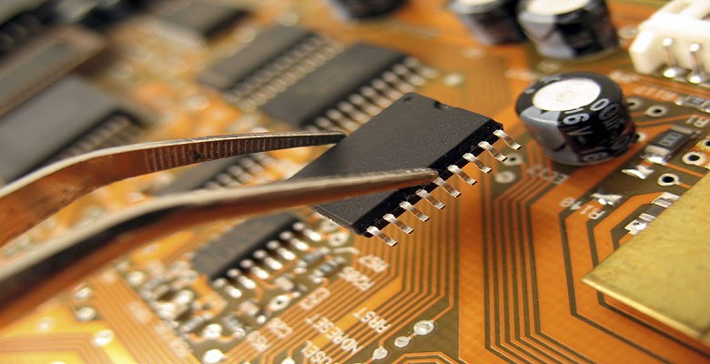

Silicon Design And Validation Services
We have full range of Silicon Design Validation services listed below with our experts team at customer design centers.
Resource Augmentation
Whether you are in starting phase, middle or end stage of project we can provide the key recourse augmentation for meeting your project mile stones. We have the expertise team who can work as part of team making the teams goals achievable with high quality and dedication. We value the customer success as our success so whether we are part of the team or own the full project doesn’t make any difference in our commitments.
Turn key
Laksh Semi will provide a fully defined model where we will provide a full team of experience engineers to execute on our customer’s project. The team can either be at Laksh design center, on-site or off-shore depending on the needs of the customer and their project. We will have a full agreement of targeted milestones and take responsibility of the project deliverables and milestones.
Silicon Design And Validation Services
- The opportunity for semiconductor companies in the internet of things is projected to grow at an annual rate of 29% through 2020. There will be demand for diverse low power and cost, rich multi-media, sensing, connectivity IPs.
- However, there are a number of challenges facing the semiconductor sector including resource agility to enable product roadmap agility and ability to orchestrate the skills against the backdrop of a fragmented "long tail” of SoC applications.
- We have started Laksh Semiconductors to provide high quality engineering services for the semiconductor industry helping design chips at the leading edge of process nodes, foundries. We have the capacity, capability and talent for tomorrow's SoC with services that span digital, analog mixed-signal as well as embedded software and hardware platforms.
- We have wide range of VLSI services and capability for the semiconductor industry from silicon design, RTL, validation and verification, Embedded Device drivers, middleware and system integration.
Some of our VLSI services include:
Physical Design
Time to market and PPA are both significantly challenged in 16nm and lower technologies. Working with the latest processes, tools and talent we have the capability that can deliver on-time first time success silicon results. Our expertise include synthesis, timing andpower, signal integrity and noise analysis.
We focus in early stages of the design for optimizing floorplans, leveraging tools, methodologies and technologies to drive timing and physical closure while optimizing for power, performance, area and yield.
Our expertise includes signal and power integrity, power and thermal analysis and optimization, with experience down to the most advanced process nodes of 10nm and beyond.
End to End RTL to GDS FLOWS
Design partitioning and budgeting.
Block and chip level floor planning.
Block and chip level power plane design.
Constrain development physical and timing.
Logic synthesis, place and route.
Clock tree synthesis.
Post route and CTS optimization.
Block and Fullchip level timing closure
DESIGN ENVIRONMENT SETUP
UPF/CPF Development and Management.
RTL Synthesis for Netlist delivery with product target specs.
Multi Mode Multi Corner Constraints development and Management for target product specs.
RTL
The Quality of RTL has impact on area, power and performance and proper RTL design rule checking saves considerable design time and is the foundation of good quality and yield. Lasksh RTL team has expertise in SoC design, RTL coding with SystemVerilog, design rule checking (linting, CDC) and constraint development and validation.
Designing ICs optimised for Power, Area and Performance Goals with first time success on silicon.
Some of the RTL DEVELOPMENT skills include
Understanding the product specs
RTL coding in verilog / system verilog
Interaction with Validation for bug fixes
Regression runs for LINTRA checks.
Embedded software
- Advances in embedded computing are solving challenges in memory foot print, security, power consumption and performance. For example the systems that are responsible for car's engine control, in-vehicle infotainment and Advanced Driver Assistance Systems. These embedded platforms will take on more processing - at the edge - for time and mission critical decisions.
- Today smart phones rely on sophisticated embedded platforms powered by multi-core processors, support dozens of interfaces from dual cameras, Wi-Fi and Bluetooth, 3G/4G, NFC, GPS and sensors. All fit into a small foot print device that is powered by a battery. The opportunity for semiconductor companies and OEMs alike will be in connected device innovation in every vertical industry. Our services help clients take advantage of innovative board designs and complementary capabilities that combine the right mix of power, performance, size, security and reliability. We help accelerate product innovation and manage product variants.
Some of our Embedded Services include
Camera and display drivers
Power management drivers
Video codecs and firmware development
- Video Codecs (MPEG-4, MPEG-2, H.264, WMV9/VC-1,DivX,VP8) and Post processing
Image Processing(JPEG) and 2D Graphics Porting and testing
Device Drivers(I2C,SPI)
Domains
Internet of Things(IOT)
Mobile Multimedia
DTV firmware
Smart Card
Automotive applications
Verification
The cost of a full mask re-spin is starting to exceed $5M below 16nm so arriving at the right design is critical. We have the strong verification teams that utilize formalized test planning, assertion-based verification, HVLs with constrained random and functional coverage, as well as strong debug skills to gain this reputation. Power-aware verification and performance validation are adopted that ensure designs meet all feature requirements for the products with zero bugs.
Some of our Verification skills include
SV/C/UVM based verification for arm cores
Low Power verification
Formal verification using FV and LEC
GLS
Mixed signal verification with spice and dams
DFT
Today’s designs demand both low cost and high quality, especially in automotive and industrial applications. Our Design For Test methods include digital BIST and scan digital approaches and analog DFT from design through test generation, ATE bring up and optimization to meet target stuck-at and AC fault coverage levels and consequently PPM goals. Our DFR/DFQ/DFM capabilities target design for long life, grade 3/grade 2 automotive devices. We can help you optimize quality, yield and test time to meet your customer satisfaction and cost objectives from the utmost automotive quality standards to highly cost optimized, high volume consumer applications.
Library Characterization
Designing at nanometer process technologies—and especially at advanced nodes (28nm and below)—requires many additional library views in order to achieve high-quality silicon and avoid silicon re-spins due to inaccurate signoff analysis. For accurate modeling of instance-specific voltage variation or temperature gradients, it’s vital to characterize each library at multiple voltages and multiple temperatures, increasing the total number of library corners. For the most advanced processes, it is becoming common to offer alternative cell libraries that improve yield at the expense of area and performance. As a result, creating and maintaining all of these library views is becoming a major bottleneck in the design flow.
We have the library cells characterization experts to create robust solutions for:
- Library Cells characterization
- Variation modeling
- Validation of your foundation IP, from standard cells
- I/Os
- Complex multi-bit cells to memories and mixed-signal blocks.
Layout/physical verification
The Quality of silicon depends not only the design robustness but also on the physical verification sign off quality. The complex design rules in 16nm and below making the physical verification increasingly difficult.
The physical verification flow should be very robust to avoid physically induced faults due to process complexities.
We have expertise in achieving first time success in silicon with right checks for sign off.
Some of the PHYSICAL VERIFICATION FLOWS FOR SIGN OFF include
EM, IR drop analysis and fixes.
Dynamic and leakage power analysis, optimization and fixes.
Physical verification – DRC, LVS, Antenna, Density, Decap, tap, filler, sign off.
ECOs both logical and physical.
Full chip level STA sign off.
Block or subsystem level STA sign off.
Custom Circuit/Layout
As the the Demand for better PPA is increasing designers often rely on complex macros to achive their design goals. These macros include Register files, Array logic blocks, memories, encoding and decoding, parity processors etc. These requires to be highly dense close to 98% and need to work at higher speed than average logic outside.
We have the experts team who can take the challenging macro designs to meet the design goals.
Some of our custom circuit/layout skills include
Full Custom circuit design for area, timing, power intensive blocks.
Custom layout design and verification.
Static Timing analysis of custom blocks.
collaterals generations for top level integration.
Dynamic Spice simulations.
Analog and Mixed Signal
Our strong analog, mixed signal team enables you to develop or migrate mixed signal designs ranging from high speed SERDES to standard cell libraries, memories and power circuits reliably
We have experts in SERDES, phys, PLL and other mixed signal designs such as high speed DDR phys and other critical IPs.
AMS Verification and Modeling. Analog designs are subject to complex analysis that includes modeling process, voltage and temperature effects, as well as a variety of noise sources. We have expertise in modeling and Analog and Mixed Signal verification to ensure first time right success of these complex designs.
Process Porting. We help clients with the right migration of designs to new process nodes and our design and verification expertise ensure reliable good results.